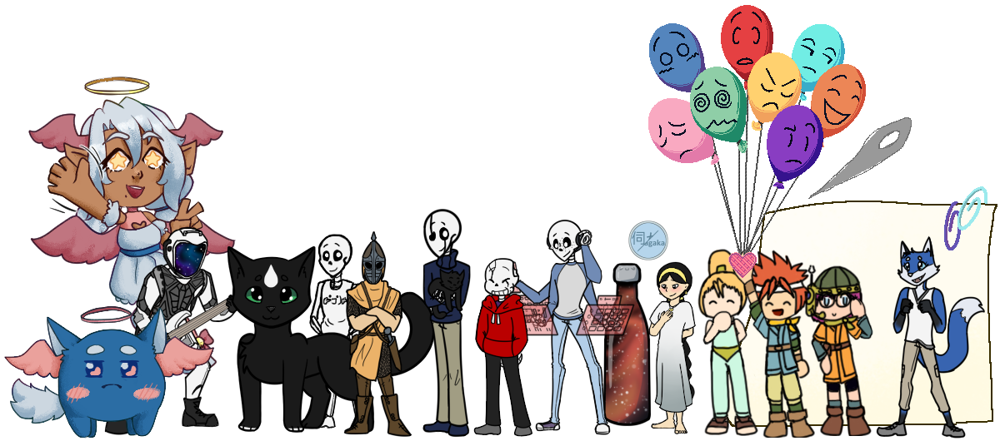

Welcome to Zi's Ukagaka Hub!
Hello, I'm Zichqec, and I make entirely too much Ukagaka content! You can use the links above to find ghosts, balloons, tutorials, functions, and more! If you're here to report a bug/give feedback/ask for advice on something I've made, my social media links are at the bottom of this page. Don't be shy about messaging me, I love to talk about this stuff!

What's an Ukagaka/ghost?
An Ukagaka, or ghost, is a character that sits on your desktop! They can do little tasks for you such as emptying your recycling bin, checking for new emails, or checking the weather. Mostly they'll just keep you company and say random dialogue, though.
My main ghosts are generally story based, with menus you can use to ask them questions, give them items, etc. A lot of my other ghosts are function based, though, as I've gotten more and more into programming.
How do I use these ghosts?
To use a ghost, you'll need a program to run it in. If you're on Windows, I recommend using SSP. If you're not on a Windows computer there are some options available, but I have not tested them myself.
Mac: Ukagaka on Macs, NiseRingo, PlayonMac+SSP, WineBottler
Linux: NINIX-AYA
For those using SSP, go ahead and download the complete install package from the website. When you run it a catgirl should appear and say something in Japanese. Drag and drop a .nar file from any of my ghosts on her, and she should install them for you. Once she's done, right click her, hover over 'change ghost', and select the appropriate ghost!
If you get an error window in Japanese when you start SSP, it probably can't find any ghosts to run. You can try dropping the .nar file onto that window. If that doesn't work, click the first button and point it towards your ghost directory(It should be \SSP\ghost). Once you've done that, you'll also have to give it a balloon in the same manner if it didn't install one. The button to direct it to a balloon directory is just under the one for ghosts.
If the right click menu is in Japanese, the language option is the 4th one up from the bottom. Select English, restart SSP(you can close it with the bottom option), and you should be good to go.
If the catgirl will not install any ghosts for you, you can unzip the .nar file and drag the contents into the \SSP\ghost folder. Your unzipped folder should have subfolders called 'ghost' and 'shell' on the top level. Restart SSP and look in the right click menu again, and they should be in your list of ghosts.
Instructions on how to use each ghost are in their readmes, which should automatically pop up when you install them! If it doesn't appear, you can see it by opening them, right clicking, and going to information>Read me.